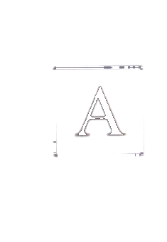
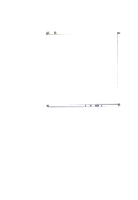
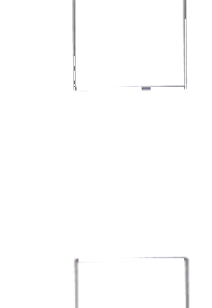
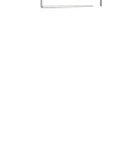
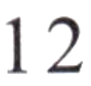
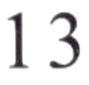
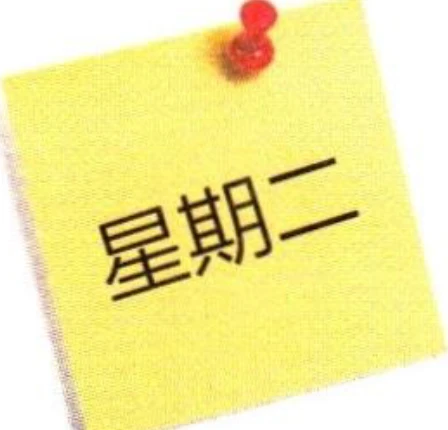
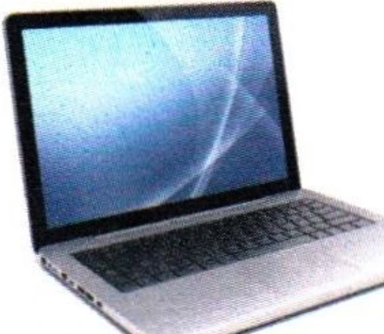
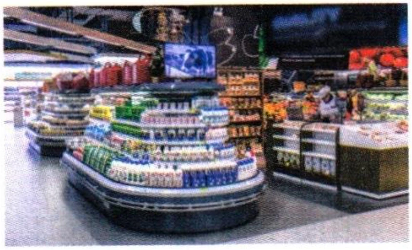

二
阅读ReadingЧтение
第一部分Part IЧасть I
第11—13题：选择与句子最匹配的图片。Questions 11-13: Choose the correct picture for each sentence.Задания 11–13: Выберите картинку, которая лучше всего подходит к предложению.
A
B

C

D

Wǒ hěn xǐhuan zhè běn shū.例如： 我很喜欢这本书。
I like this book very much.Мне очень нравится эта книга.11.
我有一个新电脑。
今天星期二。
我想去超市买东西。